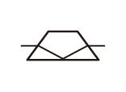
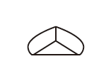
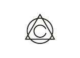
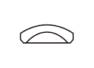
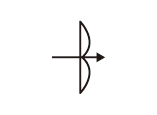

ロシアレンズ
ロシア製レンズとはいうものの、時代的にはソ連レンズである。ブランド名だけでメーカ名が入っていないが、実はメーカー名を示すロゴマークが入っている。
 VALDAI （ジュピター･バルダイ光学機械工場）ZENITのレンズに多く見られる。Helios 44-2にこのマークが入っていた。
VALDAI （ジュピター･バルダイ光学機械工場）ZENITのレンズに多く見られる。Helios 44-2にこのマークが入っていた。

KMZ（カーエームゼー） （Krasnogorsk Mechanical Factory）（クラスノゴルスク機械工場）。ZENITシリーズ。INDUSTAR 50-2、Jupiter-8にこのマークが入っていた。プリズムに光が差すイメージ。現在は「S・A・ズヴェーレフ記念クラスノゴールスク工場」という名称である。所在地はモスクワ州のクラスノゴールスク

アーセナル。ウクライナの光学・電子機器の主要企業である。正式名称は、国営工場アルセナール。ウクライナの首都キエフの中心地に所在する。「キエフ」(KIEV)などのカメラで有名
VALDAI （ジュピター･バルダイ光学機械工場）ZENITのレンズに多く見られる。Helios 44-2にこのマークが入っていた。

LZOS（ルトカリノ光学硝子工場）(英名:LYTKARINO OPTICAL GLASS FACTORY)。Industar,Jupiter,Mir等のレンズ。INDUSTAR 61 L/Zにこのマークが入っていた。

BelOMO (ベラルーシ光学機械合同)のうち、ミンスク機械工場（MMZ）のもの。ベラルーシ。アクロマートレンズのマークである。MC HELIOS 44-3にこのマークが入っていた。

VOMZ （ボログダ光学機械工場）(Vologda Optical-Machanics Factory)。モスクワ。MIR-1Bにこのマークが入っていた。
代表的なブランド
INDUSTAR（インダスター）工業製品の意味。テッサー系のINDUSTAR 50-2、INDUSTAR 61L/Z等が有名
HELIOS（ヘリオス/ゲリオス）太陽の意味。カールツァイス ビオターをコピーしたHELIOS 44シリーズが有名
MIR（ミール）平和の意味。宇宙ステーションにもありましたね。カールツァイス イエナ フレクトゴンを元にして作ったMIR-1Bが有名
JUPITER（ジュピター/ユピテル）木星の意味。カールツァイス ゾナーをコピーした、JUPITER-3、8、9が有名
Old Lens
- RICOH XR RIKENON 50mm F2
- ZENIT MC HELIOS 44-3 58mm F2
- ASAHI Opt. Co. SUPER-TAKUMAR 50mm F1.4
- Carl Zeiss JENA DDR TESSAR 50mm F2.8
- VOMZ MIR-1B 37mm/F2.8
- ZENIT HELIOS 44-2 58mm F2
- INDUSTAR 50-2 50mm F3.5
- INDUSTAR 61 L/Z 50mm F2.8
- Meyer-Optik Domiplan 50mm F2.8
- Carl Zeiss Planar T* 50mm F1.4
- PENTACON auto 29mm/f2.8
- Auto Chinon 135mm F2.8
Mount Adapter
- URTH FD-E
- K&F Concept M39-NEX
- K&F Concept M42-NEX
- SHOTEN C.Y-S.E
- 八仙堂 PK-NEX
- 八仙堂 NIKON G-NEX
- HAWK'S FACTORY L-M MH TO E
© 2022 OLD LENS ARCHIVES